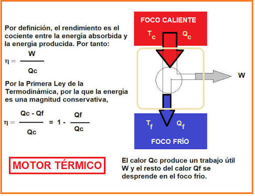

La Calculadora del Ciclo de Carnot es una aplicación que realiza el cálculo del rendimiento, la aplicación presenta los resultados de manera clara e incluye diagnósticos que verifican la validez de los datos ingresados, así como una interpretación física que facilita la comprensión del significado de los valores obtenidos. De esta forma, el usuario puede identificar si las condiciones de operación son físicamente posibles y comprender cómo la diferencia de temperaturas influye en la eficiencia de una máquina térmica.
Esta aplicación tiene como objetivo calcular el rendimiento máximo teórico de una máquina térmica ideal utilizando el Teorema de Carnot. Además, permite interpretar los resultados obtenidos y verificar si las condiciones ingresadas cumplen con la Segunda Ley de la Termodinámica.
